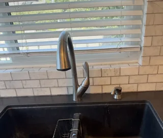
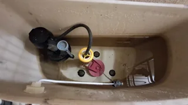
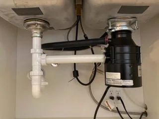
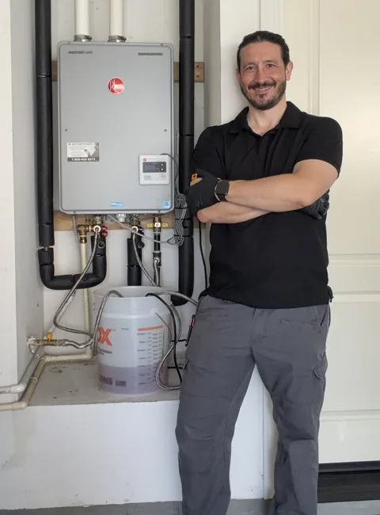
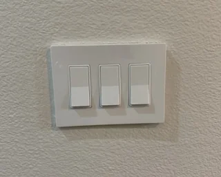
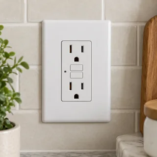
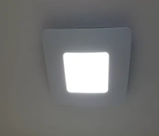
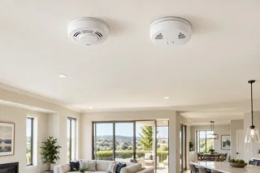

Fixture replacement
Bathroom and kitchen faucets
Customer-supplied faucet replacement, standard supply lines, pricing and the existing conditions that affect the job.
Faucet replacement detailsThe Ultra Homeowner Guide
Understand what’s happening, compare your options, and find the right repair help for your Irvine home.
Choose a topic below01 / Plumbing repairs
Focused service information for common faucet, toilet-tank and garbage-disposal problems.

Fixture replacement
Customer-supplied faucet replacement, standard supply lines, pricing and the existing conditions that affect the job.
Faucet replacement details
Running toilet repair
What the $105 tank repair includes and which toilet symptoms need a different type of service.
Running-toilet repair details
Kitchen repair
Understand common humming, leaking and non-working symptoms and when repair or replacement makes sense.
Review garbage-disposal help02 / Tankless water heaters
Choose the situation that matches your unit, then open the relevant service details or guide.

Maintenance & service
Flushing, maintenance, diagnosis, and repair for Rinnai, Rheem, Navien, and Noritz systems.
Explore tankless serviceRepair guide
What to check and when the problem needs hands-on diagnosis.
Request tankless repair in IrvineTroubleshooting guide
Common causes of reduced temperature and inconsistent hot water.
Read the guideModel-specific information, safe first checks and real repair examples.
Rinnai error-code guide
What an ignition-related Code 11 means, safe checks to make, and when to schedule diagnosis.
Understand Code 11Real Rinnai repair
What both error codes mean, safe first checks, and a real Code 15 repair of a sticking Venturi control disc.
Get Code 15 and 17 helpRinnai error-code guide
How venturi buildup can trigger Code 17 and what professional cleaning and reinstallation involve.
Understand Code 17Rinnai performance guide
Open the Rinnai performance-data display, find item 02, and compare the live outlet temperature with the setting.
See the temperature stepsRinnai recirculation guide
Pair the older rectangular wireless recirculation button, read the module lights, and test the request.
See the pairing steps03 / Electrical & smart home
Compare switches, outlets, GFCIs and connected devices, with clear installation and planning information.

Service & planning guide
Standard switches, dimmers, smart switches, outlets, GFCIs, matching plates, and cosmetic updates.
Compare device options
Common request
Learn where GFCIs are commonly used, how they differ from standard outlets, and when replacement may be appropriate.
Read about GFCIsProduct planning & service
Doorbells, cameras, thermostats, room sensors, locks, switches, dimmers, and basic app setup.
Plan a smart-home project04 / Fans & home safety
Practical product and replacement guides for everyday comfort and home safety.

Real project & product guide
See which Panasonic Flex-Z Fast models are designed for room-side installation and what to check before replacing an existing fan.
Compare bathroom fan options
Safety guide & service
Learn about placement, alarm types, interconnected systems, replacement timing, and installation in Irvine homes.
Read the alarm guideRecent Google review
“Should you need anything fixed in your house, Dustin will find a solution! He will find a product that you need for fixing your problem. We have worked with him several times and will continue to do so.”
Have a whole list?
Send the tasks together so Dustin can confirm scope, parts and the work to plan.
Small repairs & punch-list helpTell Dustin what is happening and where the project is located.
Text DustinRequest a free estimate